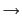
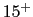
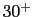
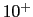
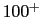
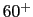
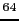
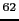

phvCurriculum Vitae, M. Haque
| |
|
|
Masudul Haque
Max-Planck Institute for Physics of
Complex Systems (MPI-PKS)
Nöthnitzer Strasse 38
01187 Dresden, Germany. |
|
haque@pks.mpg.de
Tel. office +49-351-871-1113
Tel. mobile +31-6-1116-0834
phvhttp://www.pks.mpg.de/haque/ |
- Current institute: (since October 2006)
Max-Planck Institute for the Physics of Complex Systems (MPI-PKS),
Dresden,
Germany.
Currently Staff Scientist at MPI-PKS.
Former position title: Distinguished
PKS Postdoctoral Fellow.
Held one of three such fellowships at MPI-PKS, until September 2009.
- Nov. 2003 to Sept. 2006: Postdoctoral researcher,
Utrecht University,
the Netherlands.
Employed in cold-atom theory group led by H. T. C. Stoof.
- Ph.D., October 2003.
Rutgers, State University of New Jersey.
Advisor: Andrei E. Ruckenstein.
Thesis title: Interaction Effects in the Weakly Repulsive Bose
Gas.
- Graduate student and teaching assistant, 1997 to 2003.
Rutgers, State University of New Jersey;
Department of Physics & Astronomy.
- Lecturer, 1996-97. Physics Department, Shahjalal University, Bangladesh.
- M.Sc., 1996; B.Sc., 1995. Shahjalal University,
Bangladesh.
[leftmargin=2mm]
- Area:
Condensed Matter Theory.
Collective
phenomena in electronic, nanoscale and cold-atom systems.
- Specific topics of published research:
Cross-discipline application of concepts from
Quantum Information
Theory (e.g., entanglement measures) to condensed matter issues.
Non-equilibrium phenomena; collective quantum dynamics.
Topological order and unconventional states in many-particle systems.
Fractional quantum Hall states. Frustrated magnets.
Trapped atomic fermions and bosons -- polarized fermion pairing; Feshbach
resonances; BCS-BEC crossover; vortex dynamics in Bose condensates.
Wigner crystallization.
Pomeranchuk instabilities.
Laser-excited semiconductors; excitons.
Nonlinear dynamics.
- [leftmargin=4mm]
- Title: Quantum information concepts for condensed matter
problems. (phvQICCMP)
- Co-organizers: Ian Affleck (UBC, Canada); Ulrich
Schollwöck (LMU, Munich).
- Details: 100 participants.
Two-week programme (June 14-25, 2010).
- Location: Max Planck Institute
(MPI-PKS), Dresden, Germany.
- Website: phvhttp://www.pks.mpg.de/qiccmp10/
[leftmargin=6mm]
- Currently organizing a semi-weekly meeting on ``Cold atoms & BEC'' in
Dresden.
- Organized the condensed matter theory seminar sequence at Utrecht, 2004-2006.
- Organized a lecture series on ``1D & Exact Integrability'' in Utrecht, spring 2006.
- As PhD student, administered large courses with several hundred
students.
...... etc.
Citations refer to publication list.
- Supervision:
Supervised junior researchers, for papers
[5,8,7,9,11,12,15,16,25].
Supervising summer research projects for visiting undergraduates,
e.g., two in summer 2009, one leading to paper [5].
One in summer 2010.
Guiding junior physicists in several ongoing projects.
- 1997-2001:
Teaching Assistant, Physics & Astronomy Dept, Rutgers.
Teaching physics ``recitations'' and laboratories;
course administration.
- 1996-1997:
Lecturer, Dept of Physics, Shahjalal University, Bangladesh.
Full-time teaching job, similar to teaching in a U.S. 4-year
college.
[leftmargin=6mm]
- Grants for
collaboration visits, from Research Networking Programmes of the
European
Science Foundation (ESF) (programme acronym in brackets):
from Dresden to Paris; Dec. 2009 [phvINSTANS
] & Feb. 2010 [phvINTELBIOMAT
]
Dresden to Amsterdam; two visits, April 2009 and Nov. 2006.
[phvINSTANS]
Dresden to Bristol; October/November 2008. [phvHFM
]
Utrecht to U.K. (Cambridge & Birmingham); May
2006. [phvINSTANS]
Papers
[6,11,13,14,15]
resulted partly from these visits.
- Excellence Fellowship, from Rutgers Graduate School Dean, 2002.
[leftmargin=5mm]
- Early independent publications: One paper as Ph.D. student with
co-students [24] ;
one sole-author paper in 2005
[20]; both on topics unrelated to supervisors'
interests.
- Independent collaborations during 1st postdoc:
Initiated external collaborations
(1) with K. Schoutens at Amsterdam,
(2) with
J. Quintanilla at Rutherford Lab and A. J. Schofield at Birmingham.
Both collaborations led to later publications
[7,11,13,14,15,16].
- Current work in Dresden: Pursuing self-chosen directions of
research.

Involves several collaborations, both on-site and
long-distance.
Conceived & led research leading to papers
[7,9,12,25],
and ongoing followups.
Invited presentations in Conferences & Workshops
[leftmargin=6mm]
- ESF Research Conference (June 2010, Obergugl, Austria): Quantum Engineering of States and Devices: Theory and Experiments.
Talk title: Edge-locking and Quantum Control in 1D lattice models.
- ICTP workshop (May 2009, Trieste, Italy): Research Frontiers in
Ultracold Atoms.
Talk title: The Frontier of the Few: few-particle, few-vortex, and
few-site surprises.
- Dresden Workshop (March 2008): Chaos and Collectivity in Many-Body Systems.
Talk title: A vortex dipole in a trapped 2D condensate.
- Amsterdam summer workshop (July '07): Low-D Quantum Condensed Matter 2007.
Talk title: Quantum information concepts for many-particle physics.
...... etc.
Seminars at various institutes and departments (month/year in parenthesis):
- Birth: 01/01/1974. Shariatpur, Bangladesh.
- Citizenship: Bangladesh.
[leftmargin=*]
- Overview:
- Papers marked with
were coauthored solely with junior
scientists or peers,
supervised or led by myself.
- Paper 6 is a review article.
- Citations: 250+, in January 2010.
For selected papers,
individual citation counts (January 2010) are noted below.
- Published:
- Self-similar spectral structures and edge-locking hierarchy in
open-boundary spin chains. --
M. Haque, Phys. Rev. A, 82, 012108 (2010).
arXiv:0906.0996.
- Disentangling Entanglement Spectra of Fractional Quantum Hall States on
Torus Geometries. --
A. M. Laeuchli, E. J. Bergholtz, J. Suorsa, and M. Haque;
Phys. Rev. Lett. 104, 156404 (2010).
- Entanglement Scaling of Fractional Quantum Hall states through Geometric
Deformations. --
A. M. Laeuchli, E. J. Bergholtz, and M. Haque;
New Journal of Physics 12, 075004 (2010).
- Interaction induced fractional Bloch and tunneling oscillations .
R. Khomeriki, D. O. Krimer, M. Haque, and S. Flach;
Phys. Rev. A 81, 065601 (2010).
- Finite-rate quenches of site bias in the Bose-Hubbard dimer.
T. Venumadhav, M. Haque, and R. Moessner; Phys. Rev. B 81, 054305 (2010).
- Entanglement between particle partitions in itinerant many-particle states.
M. Haque, O. S. Zozulya, and K. Schoutens; arXiv:0905.4024.
J. Phys. A: Math. Theor. 42, 504012 (2009).
-
Entanglement signatures of Quantum Hall phase transitions.
O. Zozulya, M. Haque, and N. Regnault; Phys. Rev. B 79, 045409 (2009).
- Edge-localized states in quantum one-dimensional lattices.
R. A. Pinto, M. Haque, and S. Flach; Phys. Rev. A 79, 052118 (2009).
- Entanglement and level crossings in finite frustrated
ferromagnetic chains.
M. Haque, J. N. Bandyopadhyay, and V. Ravi Chandra;
Phys. Rev. A 79, 042317 (2009).
- Probing topological order in quantum Hall states using entanglement calculations.
M. Haque; AMS Contemp. Math. 482, 213 (2009).
- Particle partitioning entanglement in itinerant many-particle systems.
O. Zozulya, M. Haque, and K. Schoutens; Phys. Rev. A 78, 042326 (2008).
- A vortex dipole in a trapped two-dimensional Bose condensate.
W. Li, M. Haque and S. Komineas; Phys. Rev. A 77, 053610 (2008).
- Symmetry-breaking Fermi surface deformations from central interactions in two dimensions.
J. Quintanilla, M. Haque, and A. J. Schofield; Phys. Rev. B, 78, 035131 (2008).
- Pomeranchuk instability: symmetry breaking and experimental signatures.
J. Quintanilla, C. Hooley, B. J. Powell, A. J. Schofield, and M. Haque;
Physica B: Condensed Matter, 403, 1279 (2008).
-
Bipartite entanglement entropy in fractional quantum Hall
states.
O. Zozulya, M. Haque, K. Schoutens, and E. H. Rezayi;
Phys. Rev. B 76, 125310 (2007).

citations.
- Entanglement entropy of fermionic Laughlin states.
M. Haque, O. Zozulya, and K. Schoutens; Phys. Rev. Lett. 98, 060401 (2007).

citations.
- Trapped fermionic clouds distorted from the trap shape due to
many-body effects.
M. Haque & H. T. C. Stoof; Phys. Rev. Lett., 98, 260406 (2007).

citations.
- Deformation of a Trapped Fermi Gas with Unequal Spin
Populations.
G. B. Partridge, Wenhui Li, Y. A. Liao, R. G. Hulet,
M. Haque, and H. T. C. Stoof; Phys. Rev. Lett. 97, 190407 (2006).

citations.
- Pairing of a trapped resonantly interacting fermion
mixture with unequal spin populations. --
M. Haque & H. T. C. Stoof; Phys. Rev. A 74, 011602 (2006).

citations.
- Ring-shaped luminescence pattern in biased quantum wells
studied as a steady state reaction front. --
M. Haque; Phys. Rev. E 73, 066207 (2006).
- Squeezing in the weakly interacting uniform Bose-Einstein
condensate.
M. Haque & A. E. Ruckenstein; Phys. Rev. A, 74, 043622 (2006).
- Ultracold superstring in atomic boson-fermion mixtures.
M. Snoek, M. Haque, S. Vandoren, and H. T. C. Stoof;
Phys. Rev. Lett. 95, 250401 (2005).
citations.
- Dynamics of a molecular Bose-Einstein condensate near a
Feshbach resonance.
M. Haque & H. T. C. Stoof;
Phys. Rev. A 71, 063603 (2005).
- Structural Transition of Wigner Crystal on Liquid
Substrate.
M. Haque, I. Paul and S. Pankov; Phys. Rev. B 68, 045427 (2003).
- Survival benefits in mimicry: a quantitative framework.
A. Mikaberidze & M. Haque;
J. Theor. Biol. 259, 462 (2009).
- Anomaly in the normalization constant of the (
 He,p)
reaction.
He,p)
reaction.
M. Haque et. al.,
Nuovo Cimento A, 111A, 1131 (1998).

Cu levels from the 
Ni(He,p) reaction
at 18 MeV.
A. K. Basak et. al., Phys. Rev. C 56, 1983 (1997).
enumerate
- Publicly available preprints (submitted or unpublished)
enumerate
- Three-vortex configurations in trapped Bose-Einstein condensates.
J. A. Seman, E. A. L. Henn, M. Haque, R. F. Shiozaki, E. R. F. Ramos,
M. Caracanhas, C. Castelo Branco, G. Roati, K. Magalhaes, V. S. Bagnato,
arXiv:0907.1584.
- Transition Temperature of Dilute Weakly Repulsive Bose
Gas.
M. Haque & A. E. Ruckenstein, cond-mat/0212590.
- Weakly Non-ideal Bose Gas: Comments on Critical
Temperature Calculations.
M. Haque, cond-mat/0302076.
This document was generated using the
LaTeX2HTML translator Version 2002-2-1 (1.70)
Copyright © 1993, 1994, 1995, 1996,
Nikos Drakos,
Computer Based Learning Unit, University of Leeds.
Copyright © 1997, 1998, 1999,
Ross Moore,
Mathematics Department, Macquarie University, Sydney.
The command line arguments were:
latex2html -split 0 MHaque_CV_july2010.tex
The translation was initiated by masudul haque on 2010-08-01
masudul haque
2010-08-01